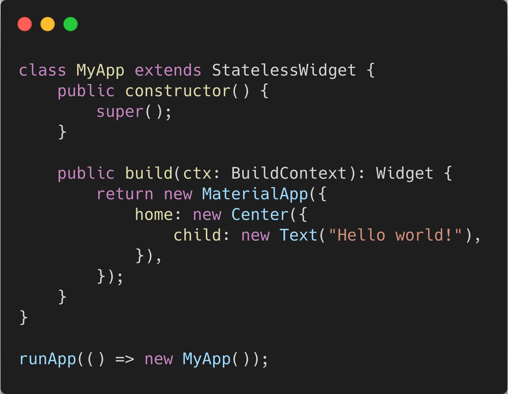
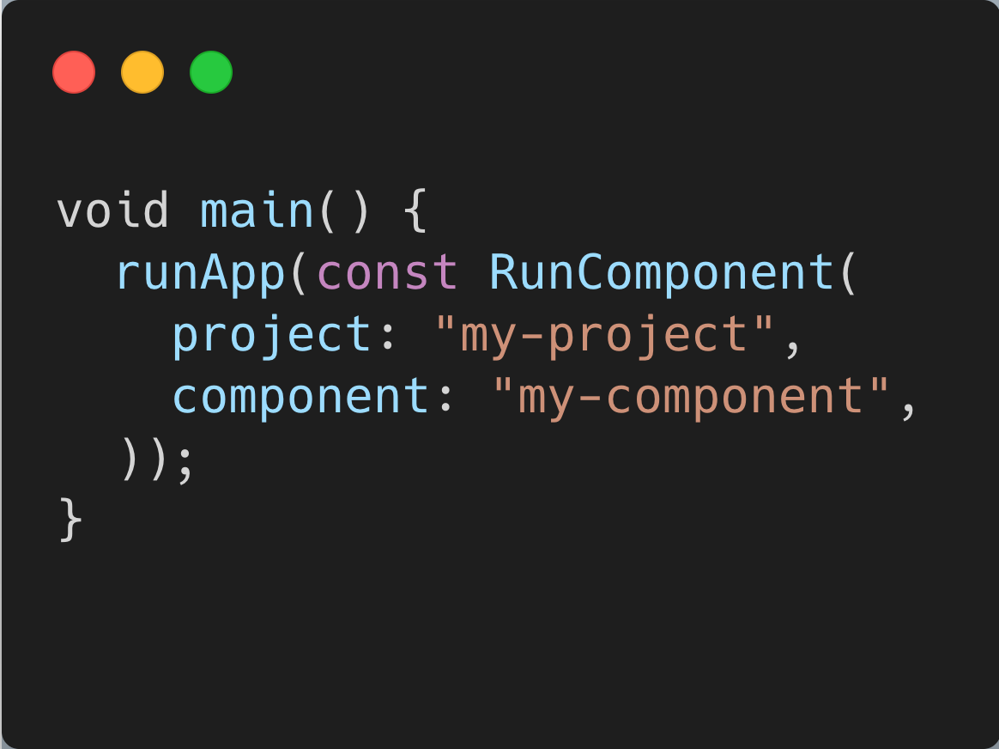
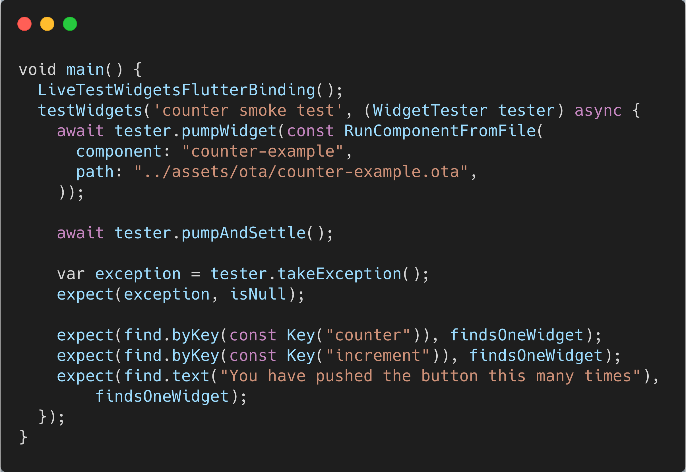
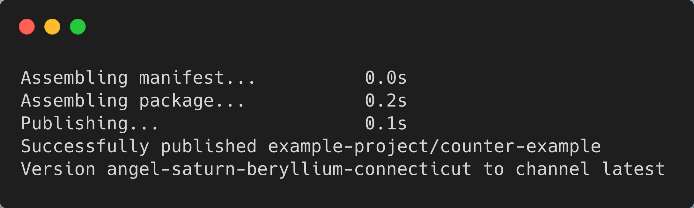

Hydro-SDK
Author Flutter experiences in Typescript. No native bridge, no V8. Just Dart. From runtime to virtual machine.

Familiar APIs
Use the Flutter and Dart APIs you already know and love

Easy Integration
Write parts of your app, or even your entire app with Hydro-SDK. It's all widgets

Tests Like Any Other
Build your Hydro-SDK components into standalone packages. Test them like any other widget

Codepush
Deliver updates directly to your users over the air and out of band. No app stores or long reviews